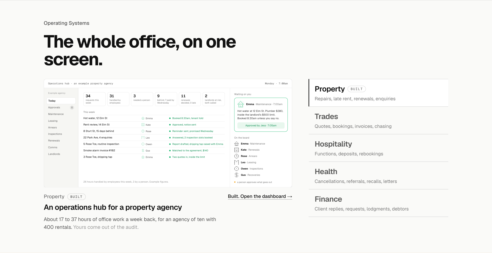
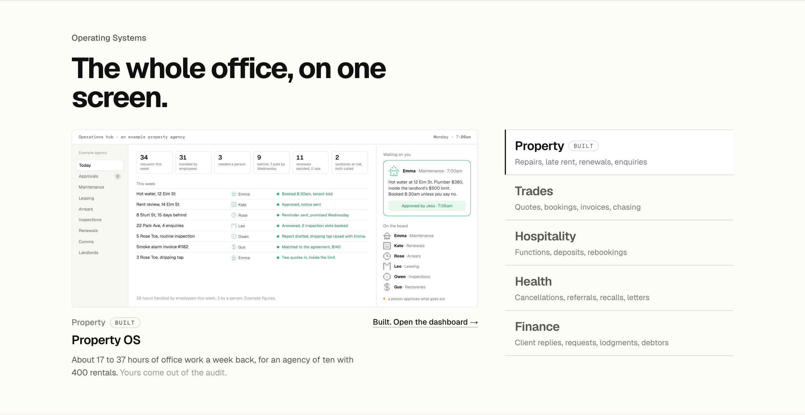
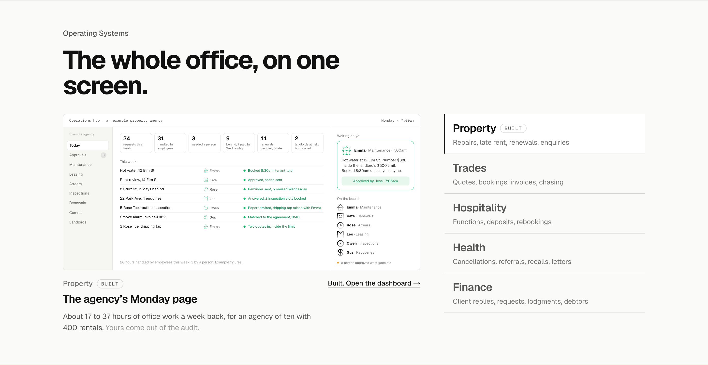
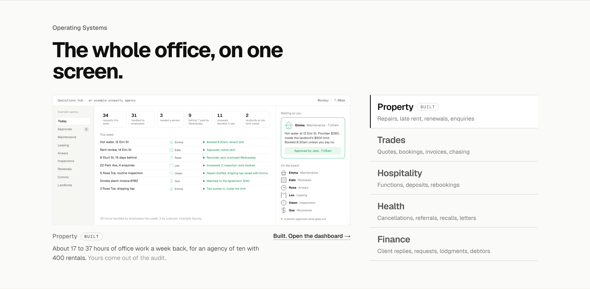

Operating Systems: the title under the screen three ways
The line under the screen that names the system. Today it describes it (an operations hub for a property agency); the three options name it like the rung, say what the screen is, or drop it. The industry label and the one-sentence line stay in every option.
Today“An operations hub for a property agency”The system described as a thing: a hub for an agency, a season board for a practice. Reads like a catalogue entry under a screen that already shows it.

1. Named like the rung“Property OS”The system named the way the ladder names it: the AI operating system for Property, shortened to the two words the long-run plan already uses (FinanceOS, BusinessOS). Short, owned, the same shape for all five. Recommended.

2. What the screen is“The agency’s Monday page”The title says what the owner is looking at: the agency’s Monday page, the trade office’s 7am, the clinic’s week, the venue’s functions board, the practice’s season. Closest to the screens, different for each.

3. No title“Property, then the line”The title goes; the industry label and the one-sentence line carry it, and the screen’s own bar says what it is. The list already names the industry big, so nothing is lost.
